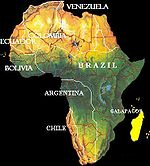

De: La Frikipedia, la enciclopedia extremadamente seria.
De: La Frikipedia, la enciclopedia extremadamente seria. De: La Frikipedia, la enciclopedia extremadamente seria.
| De la serie Países del planeta tierra: | |||||
| Republicão Federativo do Brasil | |||||
|---|---|---|---|---|---|
| |||||
| Lema: "O mais grande do mundo" | |||||
| Himno: Ai Se Eu Te Pego
| |||||
| 
| |||||
| Capital | Brasilia (legislativa), Me Río de Janeiro (carnavaleña), São Paulo (turística) | ||||
| Mayor ciudad | São Paulo (solo en Carnaval) | ||||
| Lenguas oficiales | Portugués y carnavaleño | ||||
| Gobierno | República Carnavaleira | ||||
| Rei do futebol | O Rei Pelé | ||||
| Área | La Amazonia y el resto es indeterminada, todo es verde | ||||
| Población | 259,394,385,295,178,291 habitantes. 17% furbolistas, 36% mujeres en bikini, 47% delincuentes. | ||||
| Moneda | Balones de fútbol | ||||
| Zona horaria | Sombra, Hay mucho árbol | ||||
| Dominio Internet | .futebol | ||||
| Código telefónico | Allí se comunican con 2 latas unidas por un hilo
| ||||
| Ahora con un 50 % menos de favelas a la vista | |||||
«7 a 1»
~ Alemán haciendo llorar muy efectivamente a un Brasileño.
«Estamos ensayando un nuevo baile, La Penetrada, a su lado un polvo parece una misa»
~ Brasileño enseñando a bailar a Marge Simpson
«Para mi la favorita es Brasil»
~ Luis Aragonés cuando le preguntaron por la Eurocopa
«El Papa es argentino pero Dios es brasileño»
~ Dilma Rousseff acerca de la nacionalidad de Hanuman, el dios mono
Brasil es en país de Sudamérica, el más grande del mundo. Es el principal productor y exportador mundial de piratería, garotas y furbolistas. Fue colonia de Portugal hasta que la dejaron librada a su suerte por no querer repetir la historia del Imperio Español.
Después de la invención de América en 1492 por parte de los aspañoles, los portugueses se dieron una vuelta por esa zona para ver si era cierto o un mito inventado por Cristóbal Colón. En 1500 un navegante portugués "descubrió" Brasil y lo anexó a la corona portuguesa. Para evitar conflictos, las coronas portuguesa y aspañola firmaron el Tratado de Corre-sillas, en virtud del cual trazaron una línea de cal que delimitaba sus colonias: pa'l este era de Portugal y pa'l oeste era de Aspaña. Sin embargo los portugueses con disimulo borraban la raya y la volvían a pintar un poquito más al Occidente, extendiendo su territorio de a poco.
Durante la época colonial de Brasil se trajo contenedores repletos de esclavos de África, quienes con el tiempo impusieron su cultura por encima de la de Portugal. Este tipo de esclavo era distinto al que llevaron los aspañoles y su afán por los carnavales llevó al Brasil a la extinción casi total en numerosas ocasiones. Sin embargo no se podía usar mano de obra local como en el Río de la Plata o México porque los aborígenes de estas tierras eran caníbales y al menor descuido te dejaban con la mitad de los trabajadores, llegando incluso a comerse sus propias manos en su afán de no trabajar.
Durante esta época se desarrolló la agricultura, creciendo las plantaciones de maría por todo el territorio, cultivada para uso medicinal como remedio para que los ciegos no se vuelvan más ciegos. Esta fue la actividad principal hasta el descubrimiento de oro que motivó la población de zonas alejadas de la costa. La explotación de las minas dejó de ser rentable cuando Blancanieves empezó a usar el oro como sustituto de la coca.
El grupo de autoayuda para combatir la oroadicción conocido como Incontinência Mineira fue liderado por un boxeador retirado conocido como Tiradentes, famoso por su cross a la mandíbula. El grupo se disolvió cuando descuartizaron a su líder, hoy héroe nacional y excusa para tener un feriado más.
La etapa colonial se acabó cuando Napoleón invadió Portugal y se encontró con que la familia real is in another castle. Brasil pasó a ser un reino aparte y Juan VI coronado rey, pero apenas Napoleón se fue de Portugal, volvió a casa dejando a su hijo Pedro I como gerente. Durante este período se industrializó la producción de drojas y se fundó el Banco do Brasil, para financiar más plantaciones de maría.
Tiempo después Pedro I formalizó la independencia de Portugal para evitarse problemas, al ver como los aspañoles la liaban parda con sus colonias. Fue sucedido por su hijo, Pedro II, un gran líder que será recordado por la Guerra de la Triple Alianza, que unió a los débiles estados de Brasil, Argentina y Uruguay para derrotar al poderoso Imperio Paraguayo. Su hija, Isabel II, se enamoró de un negro y decretó la abolición de la esclavitud para poder casarse con él. El problema fue que no indemnizaron a los propietarios de los esclavos, perdiendo el apoyo de los terratenientes que eran los únicos que todavía apoyaban la monarquía. Actualmente, heredaron la misma ineptitud de los portugueses.
En 1889 proclaman la república, dando inicio al período de industrialización de Brasil conocido como República Vieja, que duró hasta la renuncia voluntaria de Getúlio Vergas. En esta etapa se reemplazó la agricultura por las fábricas, o lo que es lo mismo, dejaron de cultivar maría para sintetizar LSD en laboratorios.
Luego vendría el período denominado República Nueva o República del 46. De esta época destacan la nueva Constitución, la Copa del Mundo de Fútbol de 1950 y la fabricación de una nueva capital llamada Brasilia. El período acabó con un gobierno inepto, lo que provocó inflación y estancamiento económico, lo que provocó un golpe militar, lo que provocó el fin del gobierno inepto que había provocado la inflación y estancamiento económico que había provocado... bah, ya lo dije.
La democracia retornó en en 1985, dando inicio a la Nueva República (no confundir con República Nueva, en Brasil no se aplica la propiedad conmutativa). El primer presidente debió ser Tancredo Neves, pero se agarró una peste hospitalaria y la palmó poco después. Su lugar lo tomó José Sarney. En 1988 se promulgó la Constitución que rige actualmente el país, en la que se declaró a las favelas como zona liberada. Su sucesor en el cargo fue Fernando Collor de Mello, derrocado por una conspiración liderada por Maná, acusándolo de ser el responsable cuando los ángeles lloran. Su vicepresidente tomó el mando hasta que fue reemplazado por Lula da Silva, un camionero que ganó la elección en forma aplastante y cinco años después reelecto en forma más aplastante todavía.
Los diez años de mandato de Lula posicionaron a Brasil como una de las potencias emergentes, incluyéndolo en el TETRA BRICK, junto a Rusia, India, China y Kazajstán.
Actualmente el país se encuentra gobernado por una mujer, Dilma Rousseff, cediendo a la moda de poner a mujeres a mandar, que ya fue adoptada por Argentina con Cretina Fernández y Shile con Mishel Bashelet. Se sabe también que Brasil está destinando fondos para la creación de un robot aniquilador con el que piensan gobernar el mundo. Este robot sería bautizado con el nombre de SATANAS II. También se ha descubierto que Brasil tiene los derechos del cuerpo de Lenin, que usarán como base para un proyecto secreto.
Brasil puede presumir de ser el país más grande de Sudamérica, limitando con todos los demás países sudamericanos excepto Ecuador y Shile porque nadie quiere juntarse con ellos. Visto desde un satélite es un gran manchón verde, en el norte por la selva de Amazonas y en el resto del país por las plantaciones de hierbas medicinales. El relieve está dominado por planaltos, planicies y plancton y es surcado por el río Amazonas, el más largo del mundo.
Su fauna es la típica de las zonas tropicales, con papagayos y otras aves vistosas. Debido a la selva el país está infestado de monos, algunos de los cuales evolucionaron en futbolistas y hoy cobran un pastón. En lo que respecta a reptiles, abundan las anacondas que mantienen la población de monos a raya y las cobras que diferencia de lo que pudiera suponerse, pican gratis.
Dado su clima tropical, todo el año es verano en Brasil. El invierno es generado en forma artificial (para que los turistas sepan que acabó el Carnaval y se vayan de una puta vez), con aspersores para simular lluvia y lanzaespuma sobrante del carnaval como sucedáneo de nieve.
Actualmente es una superpotencia agrícola, exporta el 45% de la hachís y cocaína entre otros. También es un país industrializado y gran exportador de automóviles de clase media baja con grandes compartimientos, perfectos para esconder droga; bombones Garoto rellenos de coca, cerveza Brahma con drogas y aviones de carga de la empresa brasileña Embraer, la mayor del mundo en transporte de droga de alto y medio porte.
Como toda América Latina, produce y exporta futbolistas y grandes cantidades de música, películas y software pirata.
Brasil posee una cultura muy festiva heredada de los aborígenes y los esclavos traídos de África. Celebran una versión modificada del Carnaval de Venecia que parece velorio en comparación con el de Río de Janeiro. En honor a estos bacanales han construido sambódromos que vendrían a ser hipódromos para sambar. Durante los carnavales brasileños se realiza el desfile de carrozas alegóricas y cuerpos de baile que danzan al ritmo de las batucadas con escasa o nula ropa. Se cree que estas batucadas inspiraron a Lars Ulrich para crear una forma diferente de percusión que aplicó en el disco St. Anger. El gobierno de Dinamarca ha pedido perdón oficialmente por este incidente para evitar que una turba enardecida incendie Brasil, salvando así de la quema a los campos de marihuana.
La mayoría de los brasileños son católicos pero Brasil es oficialmente un Estado laico y la religión allí es algo flexible. Tanto que se pueden hallar protestantes, evangelistas, adventistas, mormones, y principalmente testículos de Jehová, con su clásico Pare de Sufrir.
La cultura africana dejó como herencia una gran variedad de religiones, que son mezcla de creencias espiritistas y cristianas, fenómeno llamado cretinismo. Las más practicadas son el candomblé y el umbanda. Sus santos son llamados orixás, como Iemanjá, la diosa de los navegantes, marineros y pescadores, y orixá de los que se meten hasta la rodilla na más.
Los estilos musicales de Brasil son el resultado de la influencia de la cultura caribeña y africana, cagándose en la herencia portuguesa, que de hecho no produce música. Los más reconocidos son la samba, la batucada, el pagode, la lambada, la bossa nova y el axé. En el sur del país predomina la música gaúcha, con géneros como el sertanejo, el chamamé y el fandango. A contracorriente se encuentra la banda de thrash/death metal Sepultura.
Referentes musicales de este país son:
La producción cinematográfica brasileña es en su mayoría películas pr0n de zoofilia. Aquí han debutado estrellas reconocidas como Mr. Ed y Rin Tin Tin.
La televisión está dominada por SBT y Red Globo. A pesar de ser un país futbolero por excelencia, los partidos televisados se juegan a altas horas de la noche ya que los brasileños respetan el horario de la telenovela que es inamovible y la emisión no se interrumpe ni para informar que los marcianos invadieron el planeta. Hay que destacar el Projac, el estudio de televisión mais grande do mundo donde se graban seis telenovelas al año y el clásico Domingão do Faustão, versión local de Sábado Gigante, siendo Faustão una especie de Don Francisco.
La literatura brasileña posee grandes referentes como Carlos Drummond de Andrade entre los escritores serios y Paulo Coelho entre los vendedores de libros de autoayuda. A este último pertenecen los libros El alquimista zoófilo y Verónica decide morir violada por un caballo
En arquitectura destaca por su labor Oscar Niemeyer, una especie de Antoni Gaudí brasileño, quien diseñó la sede de la ONU y la ciudad de Braslia entera.
Brasil es un pueblo muy trabajador, y por eso tiene muy pocos días festivos:
Brasil es la primer potencia mundial en materia futbolística y los jugadores son su principal producto de exportación. La selección brasileña ha conseguido el título de Campeón del Mundo en 5 ocasiones, en los demás mundiales la verde-amarela no se presentó porque les duraba la resaca del festejo. Organizaron la Copa del Mundo de 1950 y organizarán la de 2014 porque el mundo no se acabó en 2012.
Se rumorea que hay laboratorios criogénicos escondidos en la Amazonia, donde crean superjugadores. La mayoría de ellos tienen nombres largos que incluyen los apellidos de todos los ingenieros que trabajaron en su desarrollo, aunque para fines prácticos se los conoce por su nombre clave. Una breve lista de los más recordados para avalar la teoría del laboratorio criogénico y seguimos camino:
La selección brasileña de baloncesto también ha ganado infinidad de campeonatos internacionales. Es la segunda del continente americano, por detrás de Estados Hundidos. Desde su aparición en los campeonatos se prohíbe encestar con el pie.
El GP de Brasil se corre en el Circuito de Interlagos. Suele albergar la última carrera de la temporada, donde frecuentemente se decide el campeón. En esta tierra han surgido grandes pilotos de Fórmula 1. Algunos de ellos son:
Son vigentes campeones de los 200 metros dando toques con el balón, así como del chute a la piedra y subcampeones de teto . Muchos de sus futbolistas también son campeones de bicicleta. Como Bicicinho do rueda, o Ruedandinho por la Montanhina
Su obsesión por convertirlo todo en baile los llevó a transformar las artes marciales en una danza no apta para epilépticos llamada capoeira, manteniendo el sistema de cinturones para identificar el nivel de capoeirismo del bailarín/judoca.
Entre sus luchadores más conocidos están Blanka, mitad hombre, mitad Hulk que daba descargas eléctricas en Street Fighter y Glaube Feitosa que reparte hostias como panes en la K-1.
| |
|---|
| Bahamas | Barbados | Dominica | Granada | Guyana | Haití | San Cristóbal y ¿Nieves? | San Vicente y las Granadinas | Santa Lucía | Trinidad y Tobago | Uruguay | Venezuela |
Autor(es):